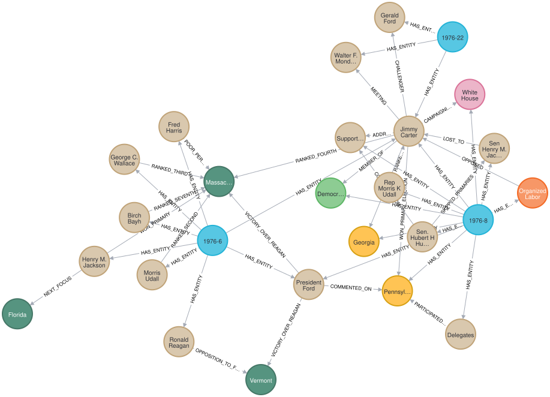
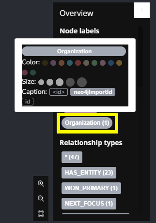
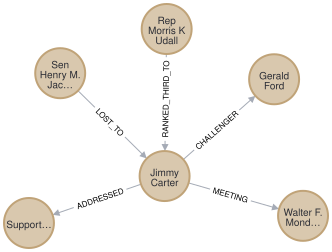

MATCH p=(a:Article)-[:HAS_ENTITY]->(e)-[r]-()
RETURN pExplore a Knowledge Graph
The sandbox contains a prebuilt knowledge graph.
The knowledge graph represents just 3 news articles covering the 1976 United States presidential election:
|
Note
|
Learn more about these news articles
The 3 articles were taken from the NewsWire dataset that contains 2.7 million unique public domain U.S. news wire articles, written between 1878 and 1977. The dataset was created to provide researchers with a large, high-quality corpus of historical news articles. These texts provide a massive repository of information about historical topics and events - and which newspapers were covering them. The dataset will be useful to a wide variety of researchers including historians, other social scientists, and NLP practitioners. You can view the Python code which extracted these articles from the dataset in the |
The knowledge graph maps the relationships between the following entity types referred to in the articles:
-
Person -
Location -
Organization -
Building -
Political party -
State
Run this Cypher to reveal how the entities from the articles are related to each other:

You can see that all 3 articles are connected within the graph through the Person entity Jimmy Carter.
|
Tip
|
Node colors and captions
You can set the color of nodes and the text displayed by clicking on the node label, selecting a color and a property to use as the caption.  |
The relationships within knowledge graphs allow you to explore how entities are connected and related to each other.
For example, how was Jimmy Carter connected to other Person entities:
MATCH (p:Person {id:"Jimmy Carter"})-[r]-(p2:Person)
RETURN p, r, p2
You can use the nodes and relationships to understand how different entities are related, for example, Person and State entities:
MATCH (p:Person)-[r]-(s:State)
RETURN p, r, sThe following query will show you how the entities of a specific article are connected in the knowledge graph:
MATCH (a:Article {id:"1976-8"})-[:HAS_ENTITY]->(e)
MATCH (e)-[r]-(e2)
WHERE (a)-[:HAS_ENTITY]->(e2)
RETURN e, r, e2Restricting the entities to only those from a specific article will give you a structured data view of that article.
Take some time to explore the knowledge graph and see how the entities are connected. Clicking on a node will display its properties. You can double-click on a node or click to focus on a node, then click the graph icon to expand its relationships.
Check your understanding
The Challenger to Jimmy Carter
Using the relationships in the knowledge graph determine who was the challenger to Jimmy Carter?
-
❏ Sen Henry M. Jackson
-
❏ Rep Morris K Udall
-
✓ Gerald Ford
-
❏ Walter F. Mondale
Show hint
|
Tip
|
Hint
The answer is the |
Show solution
|
Tip
|
Solution
The answer is Gerald Ford. You can find the answer by executing the following Cypher statement: |
Summary
In this lesson, you explored a pre-built knowledge graph in Neo4j.
In the next lesson, you will learn more about typical use cases for a knowledge graph.